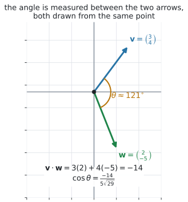
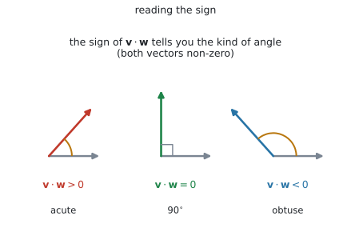

AHL 3.13a — The scalar product（スカラー積）
- scalar product（スカラー積、内積）\(\mathbf{v} \cdot \mathbf{w}\) を、成分から計算できる（\(2\) 次元でも \(3\) 次元でも）。
- 答えが vector（ベクトル）ではなく scalar（スカラー、ただの数）であることが言える。
- もう \(1\) つの形 \(\mathbf{v} \cdot \mathbf{w} = \lvert \mathbf{v} \rvert \lvert \mathbf{w} \rvert \cos\theta\) を使える。
- \(2\) つのベクトルのあいだの角 \(\theta\) を求められる。
- \(\mathbf{v} \cdot \mathbf{w}\) の符号から、角が鋭角か直角か鈍角かを言える。
- perpendicular（垂直）かどうかを \(\mathbf{v} \cdot \mathbf{w} = 0\) で判定できる。
- \(2\) 直線のあいだの acute angle（鋭角）を、方向ベクトルから求められる。
- \(\mathbf{a}\) の、\(\mathbf{b}\) の向きの component（成分）\(\dfrac{\mathbf{a} \cdot \mathbf{b}}{\lvert \mathbf{b} \rvert}\) を求められる。
このページで使うのは、上の \(3\) 行です。
| 見出し | 式 |
|---|---|
| Scalar product | \(\mathbf{v} \cdot \mathbf{w} = v_1w_1 + v_2w_2 + v_3w_3\) |
| \(\mathbf{v} \cdot \mathbf{w} = \lvert \mathbf{v} \rvert \lvert \mathbf{w} \rvert \cos\theta\) | |
| Angle between two vectors | \(\cos\theta = \dfrac{v_1w_1 + v_2w_2 + v_3w_3}{\lvert \mathbf{v} \rvert \lvert \mathbf{w} \rvert}\) |
残りの \(3\) 行（vector product、\(\lvert \mathbf{v} \times \mathbf{w} \rvert\)、平行四辺形の面積）は AHL 3.13b で使います。
\(\dfrac{\mathbf{a} \cdot \mathbf{b}}{\lvert \mathbf{b} \rvert}\)（\(\mathbf{b}\) の向きの成分）は、公式集にありません。 シラバスの Guidance 欄にだけ書かれています。ただし、上の \(2\) 行から \(1\) 行で出せます（第8節）。
The idea
1. scalar product の答えは、ベクトルではなく「数」です
scalar product（スカラー積）は、\(2\) つのベクトルから \(1\) つの数を作る計算です。成分どうしをかけて、足すだけです。
\[ \mathbf{v} \cdot \mathbf{w} = v_1w_1 + v_2w_2 \tag{1}\]
\(\mathbf{v} = \begin{pmatrix} 3 \\ 4 \end{pmatrix}\)、\(\mathbf{w} = \begin{pmatrix} 2 \\ -5 \end{pmatrix}\) なら
\[ \mathbf{v} \cdot \mathbf{w} = 3(2) + 4(-5) = 6 - 20 = -14 \]
\(\mathbf{v} \cdot \mathbf{w} = -14\) であって、\(\begin{pmatrix} 6 \\ -20 \end{pmatrix}\) ではありません。
足すのを忘れるのが、いちばん多い誤りです（Common errors）。
答えに \(\begin{pmatrix} \ \end{pmatrix}\) を書いていたら、その時点で間違いです。\(\mathbf{v} \cdot \mathbf{w}\) は「気温」と同じ、ただの数です。負にもなります。
この \(\mathbf{v} \cdot \mathbf{w}\) を dot product（ドット積）とも言います。scalar product と同じものです。\(\cdot\) を落とさないでください。\(\mathbf{v}\mathbf{w}\) という書き方はしません。
2. \(3\) 次元でも、まったく同じです
公式集は、はじめから \(3\) 成分で書かれています。
\[ \mathbf{v} \cdot \mathbf{w} = v_1w_1 + v_2w_2 + v_3w_3, \qquad \mathbf{v} = \begin{pmatrix} v_1 \\ v_2 \\ v_3 \end{pmatrix}, \quad \mathbf{w} = \begin{pmatrix} w_1 \\ w_2 \\ w_3 \end{pmatrix} \tag{2}\]
\(2\) 次元は、\(3\) つ目の項がないだけです。式 1 は 式 2 の特別な場合です。
\(\mathbf{p} = \begin{pmatrix} 1 \\ 2 \\ 2 \end{pmatrix}\)、\(\mathbf{q} = \begin{pmatrix} 4 \\ 0 \\ -3 \end{pmatrix}\) なら
\[ \mathbf{p} \cdot \mathbf{q} = 1(4) + 2(0) + 2(-3) = 4 + 0 - 6 = -2 \]
\(\mathbf{i}\)、\(\mathbf{j}\)、\(\mathbf{k}\) の形で書かれていても同じです（AHL 3.10a 第3節）。\((\mathbf{i} + 2\mathbf{j} + 2\mathbf{k}) \cdot (4\mathbf{i} - 3\mathbf{k})\) も \(-2\) です。
\(2\) 成分のベクトルと \(3\) 成分のベクトルの scalar product は、定義されていません。
\(3\) 次元の問題で \(\begin{pmatrix} 3 \\ 4 \end{pmatrix}\) が出てきたら、それは平面上の話か、\(z\) 成分の書き落としです。問題文に戻ってください。
3. もう \(1\) つの形 — \(\lvert \mathbf{v} \rvert \lvert \mathbf{w} \rvert \cos\theta\)
大きさと、あいだの角から内積を出す形です。公式集の \(2\) 行目にあります。
\[ \mathbf{v} \cdot \mathbf{w} = \lvert \mathbf{v} \rvert \lvert \mathbf{w} \rvert \cos\theta \tag{3}\]

ここで \(\theta\) は、\(\mathbf{v}\) と \(\mathbf{w}\) を同じ点から描いたときの、あいだの角です（図 1）。
\(\mathbf{v} \neq \mathbf{0}\)、\(\mathbf{w} \neq \mathbf{0}\) のときだけ、\(\theta\) が決まります。シラバスが non-zero と書いているのは、このためです。
\(\theta\) は \(0^{\circ}\) 以上 \(180^{\circ}\) 以下で測ります。\(2\) 本の矢印のあいだの角は、この範囲で \(1\) つに決まります。
4. 角を出す
\(2\) つのベクトルのあいだの角を出すための式です。式 3 を \(\cos\theta\) について解いたもので、公式集の \(3\) 行目にあります。
\[ \cos\theta = \frac{\mathbf{v} \cdot \mathbf{w}}{\lvert \mathbf{v} \rvert \lvert \mathbf{w} \rvert} = \frac{v_1w_1 + v_2w_2 + v_3w_3}{\lvert \mathbf{v} \rvert \lvert \mathbf{w} \rvert} \tag{4}\]
手順は \(3\) つです。
| 手順 | すること |
|---|---|
| \(1\) | \(\mathbf{v} \cdot \mathbf{w}\) を出す |
| \(2\) | \(\lvert \mathbf{v} \rvert\) と \(\lvert \mathbf{w} \rvert\) を出す（AHL 3.10b 第1節） |
| \(3\) | 割って \(\cos^{-1}\) を取る |
さきほどの \(\mathbf{v} = \begin{pmatrix} 3 \\ 4 \end{pmatrix}\)、\(\mathbf{w} = \begin{pmatrix} 2 \\ -5 \end{pmatrix}\) なら
\[ \cos\theta = \frac{-14}{5\sqrt{29}} = -0.51994\ldots, \qquad \theta = 121.32\ldots^{\circ} \]
\(\cos\theta\) を \(-0.5\) に丸めてから \(\cos^{-1}\) を取ると、ちょうど \(120^{\circ}\) が出ます。正しい \(121^{\circ}\) と合いません。
電卓の中に入れたまま、最後に \(1\) 回だけ丸めてください。
\(121.32\ldots\) を有効数字 \(3\) 桁にすると \(121^{\circ}\) です。\(3\) 桁の角では、小数点以下が消えます。指示が to 3 significant figures なら、それで正しい答えです。
5. 符号だけで、角の種類が分かります（\(\mathbf{0}\) でないとき）
\(\mathbf{v}\) と \(\mathbf{w}\) が \(\mathbf{0}\) でなければ \(\lvert \mathbf{v} \rvert > 0\)、\(\lvert \mathbf{w} \rvert > 0\) なので、式 3 の符号を決めるのは \(\cos\theta\) だけです。
| \(\mathbf{v} \cdot \mathbf{w}\) | \(\cos\theta\) | \(\theta\) |
|---|---|---|
| 正 | 正 | acute angle（鋭角）。\(0^{\circ} < \theta < 90^{\circ}\)（\(\theta = 0^{\circ}\)、つまり同じ向きも正になります） |
| \(0\) | \(0\) | \(\theta = 90^{\circ}\) |
| 負 | 負 | obtuse angle（鈍角）。\(90^{\circ} < \theta < 180^{\circ}\)（\(\theta = 180^{\circ}\)、つまり反対向きも負になります） |

図 2 が、その \(3\) つです。
計算の見当を付けるのに使えます。 図で見て鈍角なのに \(\mathbf{v} \cdot \mathbf{w}\) が正になったら、どこかで符号を間違えています。
6. 垂直かどうかは、\(0\) かどうかで決まります
\[ \mathbf{v} \perp \mathbf{w} \iff \mathbf{v} \cdot \mathbf{w} = 0 \qquad (\mathbf{v} \neq \mathbf{0},\ \mathbf{w} \neq \mathbf{0}) \tag{5}\]
大きさを出す必要はありません。 \(\mathbf{v} \cdot \mathbf{w}\) が \(0\) かどうかだけ見ます。
\(\begin{pmatrix} 6 \\ 3 \end{pmatrix} \cdot \begin{pmatrix} -1 \\ 2 \end{pmatrix} = -6 + 6 = 0\) なので、この \(2\) 本は垂直です。
\(\mathbf{0} \cdot \mathbf{w} = 0\) は、どんな \(\mathbf{w}\) についても成り立ちます。
けれども \(\mathbf{0}\) は向きを持たないので、「\(\mathbf{0}\) は \(\mathbf{w}\) に垂直だ」とは言いません（AHL 3.10a 第8節）。
\(\iff\) が使えるのは、両方とも \(\mathbf{0}\) でないときだけです。文字が入った問題では、求めた値でベクトルが \(\mathbf{0}\) になっていないかを見てください。
\(\perp\) を含む問題は、たいてい未知の文字を決める形で出ます。\(\mathbf{v} \cdot \mathbf{w} = 0\) を方程式として解くわけです（演習 \(5\)）。
7. \(2\) 直線のあいだの acute angle
シラバスは the acute angle between two lines と書いています。直線どうしのときは、少し注意が要ります。

直線には、向きが \(2\) 通りあります。 \(\mathbf{d}\) でも \(-\mathbf{d}\) でも、同じ直線を表します（AHL 3.11 第3節）。ですから、方向ベクトルから出した角は、どちらを選んだかで \(\theta\) にも \(180^{\circ} - \theta\) にもなります（図 3 の (b)）。
\[ \text{$2$ 直線のあいだの acute angle} = \begin{cases} \theta & (\theta \leq 90^{\circ}) \\[2pt] 180^{\circ} - \theta & (\theta > 90^{\circ}) \end{cases} \tag{6}\]
ここで \(\theta\) は、\(2\) 本の方向ベクトルのあいだの角です。
図 3 は \(\mathbf{d}_1 = \begin{pmatrix} 2 \\ 3 \end{pmatrix}\)、\(\mathbf{d}_2 = \begin{pmatrix} -4 \\ 1 \end{pmatrix}\) の場合です。
\[ \cos\theta = \frac{-5}{\sqrt{13}\sqrt{17}} = \frac{-5}{\sqrt{221}}, \qquad \theta = 109.65\ldots^{\circ} \]
\(90^{\circ}\) より大きいので、\(180^{\circ} - 109.65\ldots^{\circ} = 70.34\ldots^{\circ}\)、すなわち \(70.3^{\circ}\) が答えです。
\(109.65\ldots^{\circ}\) を先に \(110^{\circ}\) に丸めてしまうと、\(180^{\circ} - 110^{\circ} = 70^{\circ}\) になり、正しい \(70.3^{\circ}\) と合いません。
丸めるのは、いちばん最後の \(1\) 回だけです（第4節）。
はじめから絶対値を取れば、場合分けが要りません。
\[ \cos(\text{acute angle}) = \frac{\lvert \mathbf{d}_1 \cdot \mathbf{d}_2 \rvert}{\lvert \mathbf{d}_1 \rvert \lvert \mathbf{d}_2 \rvert} \]
上の例なら \(\dfrac{5}{\sqrt{221}}\) から、直に \(70.3^{\circ}\) が出ます。
境目では、鋭角にはなりません。 垂直なら \(90^{\circ}\)、平行なら \(0^{\circ}\) が返ります（このすぐ下の \(2\) つ）。
この形は公式集にありません。 使うのは構いませんが、答案には \(\mathbf{d}_1 \cdot \mathbf{d}_2\) の値と \(\lvert \mathbf{d}_1 \rvert\)、\(\lvert \mathbf{d}_2 \rvert\) を書いてください。
鋭角にならない場合が \(2\) つあります。
- \(\theta = 90^{\circ}\) のとき … \(2\) 直線は垂直で、答えは \(90^{\circ}\) です。鋭角ではありませんが、\(2\) 直線のなす角としてはこれ \(1\) つに決まります
- \(\mathbf{d}_1\) と \(\mathbf{d}_2\) が平行のとき … \(2\) 直線は平行（または同じ直線）で、なす角は \(0^{\circ}\) です（AHL 3.11 第8節）
\(3\) 次元では、平行でも交わりもしない skew（ねじれの位置の）直線があります（AHL 3.11 第7節）。
それでも、方向ベクトルのあいだの角は計算できます。 式 6 は交点があるかどうかによりません。
通る点 \(\mathbf{a}\) は、角には関係しません。 使うのは方向ベクトルだけです。
8. \(\mathbf{b}\) の向きの成分
シラバスの Guidance が求めているのは、次の式です。
\[ \text{$\mathbf{a}$ の、$\mathbf{b}$ の向きの component} = \frac{\mathbf{a} \cdot \mathbf{b}}{\lvert \mathbf{b} \rvert} = \lvert \mathbf{a} \rvert \cos\theta \qquad (\mathbf{b} \neq \mathbf{0}) \tag{7}\]
右の形 \(\lvert \mathbf{a} \rvert \cos\theta\) は、\(\mathbf{a} \neq \mathbf{0}\) のときに使えます（\(\theta\) が決まるため）。

図 4 が、その意味です。\(\mathbf{b}\) の線の上に、\(\mathbf{a}\) の影を落としたときの長さにあたります。
第1節 までの component（成分）は、\(\begin{pmatrix} 4 \\ 7 \end{pmatrix}\) の \(4\) や \(7\)、つまり座標軸の向きの成分でした。
ここでの成分は、\(\mathbf{b}\) という好きな向きに取った成分です。\(\mathbf{b} = \begin{pmatrix} 1 \\ 0 \end{pmatrix}\) を選べば、\(\dfrac{\mathbf{a} \cdot \mathbf{b}}{\lvert \mathbf{b} \rvert} = 4\) で、\(1\) 行目の成分に戻ります。軸の向きは、選べる向きの \(1\) つというわけです。
「\(\mathbf{a}\) の、\(\mathbf{b}\) の向きの成分」なので、割るのは向きを与えるほう、つまり \(\lvert \mathbf{b} \rvert\) です。
\(\dfrac{\mathbf{a} \cdot \mathbf{b}}{\lvert \mathbf{b} \rvert}\) と \(\dfrac{\mathbf{a} \cdot \mathbf{b}}{\lvert \mathbf{a} \rvert}\) は、別の数です（例 4）。
英語では the component of のあとが \(\mathbf{a}\)、in the direction of のあとが \(\mathbf{b}\) です。割るのは、in the direction of のほうと覚えてください。
\(\mathbf{a} \cdot \mathbf{b}\) そのものではなく、\(\lvert \mathbf{b} \rvert\) で割ることに注意してください。\(\mathbf{b}\) を単位ベクトル（AHL 3.10b 第5節）に直してから内積を取っている、と見ることもできます。
\[ \frac{\mathbf{a} \cdot \mathbf{b}}{\lvert \mathbf{b} \rvert} = \mathbf{a} \cdot \hat{\mathbf{b}}, \qquad \hat{\mathbf{b}} = \frac{\mathbf{b}}{\lvert \mathbf{b} \rvert} \]
\(\hat{\mathbf{b}}\)（「\(\mathbf{b}\) ハット」と読みます）は、\(\mathbf{b}\) と同じ向きで長さを \(1\) にそろえたベクトル、つまり unit vector です。長さが \(1\) なので、\(\mathbf{a} \cdot \hat{\mathbf{b}}\) は \(\mathbf{a}\) をその向きにどれだけ進んだかという数だけを取り出します。
9. よく使う関係式
証明は問われませんが、次の \(3\) つは計算で使います。
\[ \mathbf{v} \cdot \mathbf{w} = \mathbf{w} \cdot \mathbf{v}, \qquad \mathbf{v} \cdot \mathbf{v} = \lvert \mathbf{v} \rvert^2, \qquad (k\mathbf{v}) \cdot \mathbf{w} = k(\mathbf{v} \cdot \mathbf{w}) \tag{8}\]
\(2\) つ目は、\(\theta = 0\) を 式 3 に入れれば出ます。\(\lvert \mathbf{v} \rvert = \sqrt{\mathbf{v} \cdot \mathbf{v}}\) と書けるのは、この事実によるものです（AHL 3.10b 第1節）。
\(3\) つ目から、\(\mathbf{d}\) を \(-\mathbf{d}\) に変えると内積の符号が変わることが出ます。第7節 で \(\theta\) が \(180^{\circ} - \theta\) に変わったのは、これが理由です。
Why it works
なぜ「成分をかけて足す」と、角の情報が出てくるのか。
\(\mathbf{v}\) と \(\mathbf{w}\) を同じ点から描き、先端どうしを結びます。その \(3\) 本目が \(\mathbf{v} - \mathbf{w}\) です（AHL 3.10a 第6節）。この三角形に cosine rule（余弦定理）を当てると
\[ \lvert \mathbf{v} - \mathbf{w} \rvert^2 = \lvert \mathbf{v} \rvert^2 + \lvert \mathbf{w} \rvert^2 - 2\lvert \mathbf{v} \rvert \lvert \mathbf{w} \rvert \cos\theta \]
一方、左辺を成分で展開すると（\(2\) 次元で書きます）
\[ \lvert \mathbf{v} - \mathbf{w} \rvert^2 = (v_1-w_1)^2 + (v_2-w_2)^2 = \lvert \mathbf{v} \rvert^2 + \lvert \mathbf{w} \rvert^2 - 2(v_1w_1 + v_2w_2) \]
\(2\) つを見くらべて \(\lvert \mathbf{v} \rvert^2 + \lvert \mathbf{w} \rvert^2\) を消すと
\[ v_1w_1 + v_2w_2 = \lvert \mathbf{v} \rvert \lvert \mathbf{w} \rvert \cos\theta \]
\(2\) つの形が同じ数だと分かります。\(3\) 次元でも、項が \(1\) つ増えるだけで同じです。
（\(\mathbf{v}\) と \(\mathbf{w}\) が同じ向きや反対向きだと三角形がつぶれますが、そのときは \(\cos\theta = \pm 1\) を直に入れれば確かめられます。一般の証明はシラバスの Not required です。）
なぜ \(\mathbf{v} \cdot \mathbf{w} = 0\) が垂直と同じことなのか。
\(\lvert \mathbf{v} \rvert > 0\)、\(\lvert \mathbf{w} \rvert > 0\) のとき、\(\lvert \mathbf{v} \rvert \lvert \mathbf{w} \rvert \cos\theta = 0\) になるのは \(\cos\theta = 0\) のときだけです。\(0^{\circ} \leq \theta \leq 180^{\circ}\) でそうなるのは \(\theta = 90^{\circ}\) だけなので、垂直と同じことになります。
どちらかが \(\mathbf{0}\) だと、\(\lvert \mathbf{v} \rvert \lvert \mathbf{w} \rvert = 0\) になり、\(\cos\theta\) が何であっても積が \(0\) です。角の情報がまったく出てきません。これが、シラバスが non-zero と断っている理由です。
なぜ直線では acute angle を取るのか。
\(\mathbf{d}\) と \(-\mathbf{d}\) は同じ直線を表します。式 8 の \(3\) つ目で \(k = -1\) とすると
\[ (-\mathbf{d}_1) \cdot \mathbf{d}_2 = -(\mathbf{d}_1 \cdot \mathbf{d}_2) \]
大きさは \(\lvert -\mathbf{d}_1 \rvert = \lvert \mathbf{d}_1 \rvert\) で変わらないので、\(\cos\theta\) の符号だけがひっくり返ります。\(\cos(180^{\circ} - \theta) = -\cos\theta\)（AHL 3.8 の Why it works）なので、角は \(180^{\circ} - \theta\) になります。
つまり、方向ベクトルの選び方で \(\theta\) と \(180^{\circ} - \theta\) の \(2\) つが出てしまうわけです。どちらを選んでも同じ答えになるように、「鋭角のほう」と決めているのです。
なぜ \(\mathbf{b}\) の向きの成分が \(\dfrac{\mathbf{a} \cdot \mathbf{b}}{\lvert \mathbf{b} \rvert}\) なのか。
式 3 を \(\lvert \mathbf{b} \rvert\) で割るだけです。
\[ \frac{\mathbf{a} \cdot \mathbf{b}}{\lvert \mathbf{b} \rvert} = \frac{\lvert \mathbf{a} \rvert \lvert \mathbf{b} \rvert \cos\theta}{\lvert \mathbf{b} \rvert} = \lvert \mathbf{a} \rvert \cos\theta \]
\(\lvert \mathbf{a} \rvert \cos\theta\) は、直角三角形の底辺の長さにあたります（図 4）。\(\theta\) が鈍角なら \(\cos\theta < 0\) なので、この数は負になり、影が反対側に落ちていることを表します。
Worked examples
問題文は英語です。意味が理解できなかったら、問題文の下の「日本語訳」を開いてください。解説は日本語です。
例題 1 Let \(\mathbf{v} = \begin{pmatrix} 3 \\ 4 \end{pmatrix}\), \(\mathbf{w} = \begin{pmatrix} 2 \\ -5 \end{pmatrix}\), \(\mathbf{p} = \begin{pmatrix} 1 \\ 2 \\ 2 \end{pmatrix}\) and \(\mathbf{q} = \begin{pmatrix} 4 \\ 0 \\ -3 \end{pmatrix}\).
(a) Find \(\mathbf{v} \cdot \mathbf{w}\).
(b) Find \(\mathbf{p} \cdot \mathbf{q}\).
(c) Show that \(\begin{pmatrix} 6 \\ 3 \end{pmatrix}\) and \(\begin{pmatrix} -1 \\ 2 \end{pmatrix}\) are perpendicular.
(d) Find \(\mathbf{p} \cdot \mathbf{p}\) and hence write down \(\lvert \mathbf{p} \rvert\).
日本語訳
\(\mathbf{v} = \begin{pmatrix} 3 \\ 4 \end{pmatrix}\)、\(\mathbf{w} = \begin{pmatrix} 2 \\ -5 \end{pmatrix}\)、\(\mathbf{p} = \begin{pmatrix} 1 \\ 2 \\ 2 \end{pmatrix}\)、\(\mathbf{q} = \begin{pmatrix} 4 \\ 0 \\ -3 \end{pmatrix}\) とします。
(a) \(\mathbf{v} \cdot \mathbf{w}\) を求めなさい。
(b) \(\mathbf{p} \cdot \mathbf{q}\) を求めなさい。
(c) \(\begin{pmatrix} 6 \\ 3 \end{pmatrix}\) と \(\begin{pmatrix} -1 \\ 2 \end{pmatrix}\) が垂直であることを示しなさい。
(d) \(\mathbf{p} \cdot \mathbf{p}\) を求め、そこから \(\lvert \mathbf{p} \rvert\) を書きなさい。
(a) 成分どうしをかけて、足します（式 1）。
\[ \mathbf{v} \cdot \mathbf{w} = 3(2) + 4(-5) = 6 - 20 = -14 \]
(b) \(3\) 成分でも同じです（式 2）。
\[ \mathbf{p} \cdot \mathbf{q} = 1(4) + 2(0) + 2(-3) = 4 + 0 - 6 = -2 \]
\(0\) になる項も、書いておいてください。 飛ばすと、成分の対応がずれます。
(c) Show that なので、\(0\) になることを計算で見せます（式 5）。
\[ \begin{pmatrix} 6 \\ 3 \end{pmatrix} \cdot \begin{pmatrix} -1 \\ 2 \end{pmatrix} = 6(-1) + 3(2) = -6 + 6 = 0 \]
どちらも \(\mathbf{0}\) ではないので、\(2\) 本は垂直です。大きさは要りません。
(d) 自分自身との内積です（式 8）。
\[ \mathbf{p} \cdot \mathbf{p} = 1 + 4 + 4 = 9, \qquad \lvert \mathbf{p} \rvert = \sqrt{9} = 3 \]
検算（(a) について）。 \(\mathbf{w} \cdot \mathbf{v}\) を、順番を入れかえて出し直します（式 8）。
\[ \mathbf{w} \cdot \mathbf{v} = 2(3) + (-5)(4) = 6 - 20 = -14 \]
同じです ✓ さらに、\(\mathbf{v}\) は右上、\(\mathbf{w}\) は右下を向いているので、図から角は鈍角のはずです。負になっていて合っています（表 3）。符号を落として \(+14\) としていたら、この向きの見立てと食い違います。
検算（(d) について）。 成分を \(2\) つだけ取った長さが、下からの目安になります。\(\mathbf{p}\) の後ろ \(2\) 成分だけで \(\sqrt{2^2+2^2} = 2.83\) なので、\(\lvert \mathbf{p} \rvert\) はこれ以上のはずです。\(3 \geq 2.83\) ✓ \(\mathbf{p} \cdot \mathbf{p}\) を \(1+2+2 = 5\) と、かけ算をせずに出していたら \(\lvert \mathbf{p} \rvert = \sqrt{5} = 2.24\) になり、\(2.83\) より小さくなって合いません。
(a) \[\mathbf{v} \cdot \mathbf{w} = 3(2)+4(-5) = -14\]
(b) \[\mathbf{p} \cdot \mathbf{q} = 1(4)+2(0)+2(-3) = -2\]
(c) \[\begin{pmatrix} 6 \\ 3 \end{pmatrix} \cdot \begin{pmatrix} -1 \\ 2 \end{pmatrix} = -6+6 = 0\] Both vectors are non-zero and their scalar product is \(0\), so they are perpendicular.
(d) \[\mathbf{p} \cdot \mathbf{p} = 9, \qquad \lvert \mathbf{p} \rvert = 3\]
例題 2 Let \(\mathbf{v} = \begin{pmatrix} 3 \\ 4 \end{pmatrix}\) and \(\mathbf{w} = \begin{pmatrix} 2 \\ -5 \end{pmatrix}\), and let \(\mathbf{p} = \begin{pmatrix} 1 \\ 2 \\ 2 \end{pmatrix}\) and \(\mathbf{q} = \begin{pmatrix} 4 \\ 0 \\ -3 \end{pmatrix}\).
(a) Find the angle between \(\mathbf{v}\) and \(\mathbf{w}\), giving your answer in degrees to \(3\) significant figures.
(b) Find the angle between \(\mathbf{p}\) and \(\mathbf{q}\), giving your answer in degrees to \(3\) significant figures.
(c) State what the sign of a scalar product tells you about the angle between two non-zero vectors, and explain why.
日本語訳
\(\mathbf{v} = \begin{pmatrix} 3 \\ 4 \end{pmatrix}\)、\(\mathbf{w} = \begin{pmatrix} 2 \\ -5 \end{pmatrix}\) とし、\(\mathbf{p} = \begin{pmatrix} 1 \\ 2 \\ 2 \end{pmatrix}\)、\(\mathbf{q} = \begin{pmatrix} 4 \\ 0 \\ -3 \end{pmatrix}\) とします。
(a) \(\mathbf{v}\) と \(\mathbf{w}\) のあいだの角を、度で、有効数字 \(3\) 桁で求めなさい。
(b) \(\mathbf{p}\) と \(\mathbf{q}\) のあいだの角を、度で、有効数字 \(3\) 桁で求めなさい。
(c) \(\mathbf{0}\) でない \(2\) つのベクトルについて、scalar product の符号が角について何を伝えるかを述べ、その理由を説明しなさい。
(a) 表 2 の順です。内積は 例 1 で \(-14\) でした。
\[ \lvert \mathbf{v} \rvert = \sqrt{9+16} = 5, \qquad \lvert \mathbf{w} \rvert = \sqrt{4+25} = \sqrt{29} \]
\[ \cos\theta = \frac{-14}{5\sqrt{29}} = -0.51994\ldots, \qquad \theta = 121.32\ldots^{\circ} \]
有効数字 \(3\) 桁で \(\theta = 121^{\circ}\) です。\(3\) 桁なので、小数点以下は残りません。
(b) \(\mathbf{p} \cdot \mathbf{q} = -2\)、\(\lvert \mathbf{p} \rvert = 3\)、\(\lvert \mathbf{q} \rvert = \sqrt{16+0+9} = 5\) でした。
\[ \cos\theta = \frac{-2}{15} = -0.1333\ldots, \qquad \theta = 97.66\ldots^{\circ} \approx 97.7^{\circ} \]
(c) explain why なので、英語で理由を書きます。
試験ではこう書く
Since \(\mathbf{v} \cdot \mathbf{w} = \lvert \mathbf{v} \rvert \lvert \mathbf{w} \rvert \cos\theta\) and both magnitudes are positive for non-zero vectors, the sign of \(\mathbf{v} \cdot \mathbf{w}\) is the sign of \(\cos\theta\). For \(0^{\circ} \leq \theta \leq 180^{\circ}\), \(\cos\theta\) is positive when \(\theta < 90^{\circ}\), zero when \(\theta = 90^{\circ}\) and negative when \(\theta > 90^{\circ}\). So a positive scalar product means an acute angle, zero means the vectors are perpendicular, and a negative value means an obtuse angle. Both parts above give negative values, which matches the angles \(121^{\circ}\) and \(97.7^{\circ}\) found there.
（\(\mathbf{v} \cdot \mathbf{w} = \lvert \mathbf{v} \rvert \lvert \mathbf{w} \rvert \cos\theta\) であり、\(\mathbf{0}\) でないベクトルでは大きさが両方とも正なので、\(\mathbf{v} \cdot \mathbf{w}\) の符号は \(\cos\theta\) の符号と同じである。\(0^{\circ} \leq \theta \leq 180^{\circ}\) では、\(\cos\theta\) は \(\theta < 90^{\circ}\) のとき正、\(\theta = 90^{\circ}\) のとき \(0\)、\(\theta > 90^{\circ}\) のとき負である。したがって内積が正なら鋭角、\(0\) なら垂直、負なら鈍角である。上の \(2\) 問はどちらも負で、そこで求めた \(121^{\circ}\) と \(97.7^{\circ}\) に合っている、という意味です。）
検算（(a) について）。 求めた角を 式 3 に戻して、内積が再現するかを見ます。
\[ 5 \times \sqrt{29} \times \cos 121.32\ldots^{\circ} = -14.0 \]
\(-14\) に戻りました ✓ \(\lvert \mathbf{w} \rvert\) を \(\sqrt{29}\) ではなく \(29\) として \(\theta = 95.5^{\circ}\) を出していたら、正しい \(5\sqrt{29}\) で戻したとき \(-2.60\) になり、\(-14\) に戻りません。
検算（(b) について）。 \(\cos\theta = -\dfrac{2}{15}\) は \(0\) に近い負の数なので、角は \(90^{\circ}\) を少し超えるはずです。\(97.7^{\circ}\) はその範囲に入っています ✓ 符号を落として \(+\dfrac{2}{15}\) としていたら \(82.3^{\circ}\) になり、\(90^{\circ}\) より小さくなってしまいます。
(a) \[\cos\theta = \frac{3(2)+4(-5)}{5\sqrt{29}} = \frac{-14}{5\sqrt{29}}, \qquad \theta = 121^{\circ} \ (3 \text{ s.f.})\]
(b) \[\cos\theta = \frac{-2}{3 \times 5} = -\frac{2}{15}, \qquad \theta = 97.7^{\circ} \ (3 \text{ s.f.})\]
(c) The magnitudes are positive, so \(\mathbf{v} \cdot \mathbf{w}\) has the same sign as \(\cos\theta\): positive gives an acute angle, zero gives \(90^{\circ}\), negative gives an obtuse angle.
例題 3 Two lines are given by \(L_1: \mathbf{r} = \begin{pmatrix} 1 \\ -2 \end{pmatrix} + \lambda\begin{pmatrix} 2 \\ 3 \end{pmatrix}\) and \(L_2: \mathbf{r} = \begin{pmatrix} 9 \\ 3 \end{pmatrix} + \mu\begin{pmatrix} -4 \\ 1 \end{pmatrix}\).
(a) Find the angle between the two direction vectors, giving your answer in degrees to \(1\) decimal place.
(b) Hence find the acute angle between \(L_1\) and \(L_2\), in degrees to \(3\) significant figures.
(c) Two lines in three dimensions have direction vectors \(\begin{pmatrix} 1 \\ 2 \\ 2 \end{pmatrix}\) and \(\begin{pmatrix} 2 \\ -1 \\ 2 \end{pmatrix}\). Find the acute angle between them, in degrees to \(3\) significant figures.
(d) Explain why the answer to (c) does not depend on which direction vector is chosen for each line.
日本語訳
\(2\) 直線が \(L_1: \mathbf{r} = \begin{pmatrix} 1 \\ -2 \end{pmatrix} + \lambda\begin{pmatrix} 2 \\ 3 \end{pmatrix}\)、\(L_2: \mathbf{r} = \begin{pmatrix} 9 \\ 3 \end{pmatrix} + \mu\begin{pmatrix} -4 \\ 1 \end{pmatrix}\) で与えられています。
(a) \(2\) つの方向ベクトルのあいだの角を、度で、小数第 \(1\) 位まで求めなさい。
(b) そこから、\(L_1\) と \(L_2\) のあいだの鋭角を、度で、有効数字 \(3\) 桁で求めなさい。
(c) \(3\) 次元の \(2\) 直線の方向ベクトルが \(\begin{pmatrix} 1 \\ 2 \\ 2 \end{pmatrix}\) と \(\begin{pmatrix} 2 \\ -1 \\ 2 \end{pmatrix}\) です。そのあいだの鋭角を、度で、有効数字 \(3\) 桁で求めなさい。
(d) (c) の答えが、各直線についてどちらの方向ベクトルを選ぶかによらない理由を説明しなさい。
(a) 使うのは方向ベクトルだけです。通る点 \(\begin{pmatrix} 1 \\ -2 \end{pmatrix}\)、\(\begin{pmatrix} 9 \\ 3 \end{pmatrix}\) は使いません（第7節）。
\[ \mathbf{d}_1 \cdot \mathbf{d}_2 = 2(-4) + 3(1) = -8 + 3 = -5 \]
\[ \lvert \mathbf{d}_1 \rvert = \sqrt{4+9} = \sqrt{13}, \qquad \lvert \mathbf{d}_2 \rvert = \sqrt{16+1} = \sqrt{17} \]
\[ \cos\theta = \frac{-5}{\sqrt{13}\sqrt{17}} = \frac{-5}{\sqrt{221}}, \qquad \theta = 109.65\ldots^{\circ} \approx 109.7^{\circ} \]
(b) \(\theta > 90^{\circ}\) なので、\(180^{\circ}\) から引きます（式 6）。
\[ 180^{\circ} - 109.65\ldots^{\circ} = 70.34\ldots^{\circ} \approx 70.3^{\circ} \]
引くのは、丸める前の値からです。 \(110^{\circ}\) から引くと \(70^{\circ}\) になり、合いません。
(c) 同じ手順です。\(3\) 成分になるだけです。
\[ \mathbf{d}_1 \cdot \mathbf{d}_2 = 1(2) + 2(-1) + 2(2) = 2 - 2 + 4 = 4 \]
\[ \lvert \mathbf{d}_1 \rvert = \sqrt{1+4+4} = 3, \qquad \lvert \mathbf{d}_2 \rvert = \sqrt{4+1+4} = 3 \]
\[ \cos\theta = \frac{4}{9} = 0.444\ldots, \qquad \theta = 63.61\ldots^{\circ} \approx 63.6^{\circ} \]
正なので、これがもう鋭角です。 \(180^{\circ}\) から引く必要はありません。
(d) Explain why なので、英語で理由を書きます。
試験ではこう書く
A line has two possible direction vectors, \(\mathbf{d}\) and \(-\mathbf{d}\). Replacing \(\mathbf{d}_1\) by \(-\mathbf{d}_1\) changes \(\mathbf{d}_1 \cdot \mathbf{d}_2\) to \(-(\mathbf{d}_1 \cdot \mathbf{d}_2)\) but leaves \(\lvert \mathbf{d}_1 \rvert\) unchanged, so \(\cos\theta\) changes sign and \(\theta\) becomes \(180^{\circ}-\theta\). The two possible answers are therefore \(\theta\) and \(180^{\circ}-\theta\), and exactly one of them is acute (unless the lines are perpendicular, when both are \(90^{\circ}\)). Taking the acute angle picks the same value whichever direction vectors are used.
（直線には方向ベクトルが \(\mathbf{d}\) と \(-\mathbf{d}\) の \(2\) 通りある。\(\mathbf{d}_1\) を \(-\mathbf{d}_1\) に置き換えると \(\mathbf{d}_1 \cdot \mathbf{d}_2\) は \(-(\mathbf{d}_1 \cdot \mathbf{d}_2)\) になるが \(\lvert \mathbf{d}_1 \rvert\) は変わらないので、\(\cos\theta\) の符号が変わり、\(\theta\) は \(180^{\circ}-\theta\) になる。したがって出うる答えは \(\theta\) と \(180^{\circ}-\theta\) の \(2\) つで、そのうち鋭角はちょうど \(1\) つである（\(2\) 直線が垂直のときだけは両方 \(90^{\circ}\)）。鋭角を取れば、どちらの方向ベクトルを使っても同じ値が選ばれる、という意味です。）
検算（(b) について）。 \(\mathbf{d}_1\) の代わりに \(-\mathbf{d}_1 = \begin{pmatrix} -2 \\ -3 \end{pmatrix}\) を使って、やり直します。
\[ (-\mathbf{d}_1) \cdot \mathbf{d}_2 = (-2)(-4) + (-3)(1) = 8 - 3 = 5, \qquad \cos\theta = \frac{5}{\sqrt{221}} \]
\(\theta = 70.34\ldots^{\circ}\) で、(b) と同じ \(70.3^{\circ}\) になりました ✓ これは (a) の \(109.7^{\circ}\) とは別の角なので、単に同じ計算を繰り返したことにはなりません。
検算（(c) について）。 \(\cos\theta = \dfrac{4}{9}\) は \(\dfrac{1}{2}\) より少し小さいので、角は \(60^{\circ}\) より少し大きいはずです（\(\cos 60^{\circ} = \dfrac{1}{2}\)。AHL 3.8 第4節）。\(63.6^{\circ}\) はその範囲に入っています ✓ \(\lvert \mathbf{d}_1 \rvert \lvert \mathbf{d}_2 \rvert\) を \(9\) ではなく \(6\) としていたら \(\cos\theta = 0.667\) で \(48.2^{\circ}\) になり、\(60^{\circ}\) より小さくなってしまいます。
(a) \[\cos\theta = \frac{2(-4)+3(1)}{\sqrt{13}\sqrt{17}} = \frac{-5}{\sqrt{221}}, \qquad \theta = 109.7^{\circ}\]
(b) \[180^{\circ} - 109.65\ldots^{\circ} = 70.3^{\circ} \ (3 \text{ s.f.})\]
(c) \[\cos\theta = \frac{1(2)+2(-1)+2(2)}{3 \times 3} = \frac{4}{9}, \qquad \theta = 63.6^{\circ} \ (3 \text{ s.f.})\]
(d) Replacing \(\mathbf{d}\) by \(-\mathbf{d}\) reverses the sign of the scalar product, so \(\theta\) becomes \(180^{\circ}-\theta\); taking the acute angle gives the same value either way.
例題 4 Let \(\mathbf{a} = \begin{pmatrix} 4 \\ 7 \end{pmatrix}\) and \(\mathbf{b} = \begin{pmatrix} 3 \\ -4 \end{pmatrix}\).
(a) Find the component of \(\mathbf{a}\) acting in the direction of \(\mathbf{b}\).
(b) Find the component of \(\mathbf{b}\) acting in the direction of \(\mathbf{a}\), giving your answer to \(3\) significant figures.
(c) Find the component of \(\begin{pmatrix} 6 \\ 2 \\ 3 \end{pmatrix}\) acting in the direction of \(\begin{pmatrix} 2 \\ -1 \\ 2 \end{pmatrix}\).
(d) Explain what the sign of your answer to (a) means.
日本語訳
\(\mathbf{a} = \begin{pmatrix} 4 \\ 7 \end{pmatrix}\)、\(\mathbf{b} = \begin{pmatrix} 3 \\ -4 \end{pmatrix}\) とします。
(a) \(\mathbf{b}\) の向きにはたらく \(\mathbf{a}\) の成分を求めなさい。
(b) \(\mathbf{a}\) の向きにはたらく \(\mathbf{b}\) の成分を、有効数字 \(3\) 桁で求めなさい。
(c) \(\begin{pmatrix} 2 \\ -1 \\ 2 \end{pmatrix}\) の向きにはたらく \(\begin{pmatrix} 6 \\ 2 \\ 3 \end{pmatrix}\) の成分を求めなさい。
(d) (a) の答えの符号が何を意味するかを説明しなさい。
(a) 式 7 です。割るのは \(\lvert \mathbf{b} \rvert\) です。
\[ \mathbf{a} \cdot \mathbf{b} = 4(3) + 7(-4) = 12 - 28 = -16, \qquad \lvert \mathbf{b} \rvert = \sqrt{9+16} = 5 \]
\[ \frac{\mathbf{a} \cdot \mathbf{b}}{\lvert \mathbf{b} \rvert} = \frac{-16}{5} = -3.2 \]
(b) 今度は \(\lvert \mathbf{a} \rvert\) で割ります。内積は同じ \(-16\) です。
\[ \lvert \mathbf{a} \rvert = \sqrt{16+49} = \sqrt{65} \]
\[ \frac{\mathbf{a} \cdot \mathbf{b}}{\lvert \mathbf{a} \rvert} = \frac{-16}{\sqrt{65}} = -1.98\ldots \approx -1.98 \]
(a) と違う数になりました。どちらの向きを聞かれているかで、割る相手が変わります。
(c) \(3\) 成分でも同じです。
\[ \begin{pmatrix} 6 \\ 2 \\ 3 \end{pmatrix} \cdot \begin{pmatrix} 2 \\ -1 \\ 2 \end{pmatrix} = 12 - 2 + 6 = 16, \qquad \left\lvert \begin{pmatrix} 2 \\ -1 \\ 2 \end{pmatrix} \right\rvert = \sqrt{4+1+4} = 3 \]
\[ \frac{16}{3} = 5.33\ldots \]
今度は正です。\(\theta\) が鋭角だということです。
(d) Explain なので、英語で意味を書きます。
試験ではこう書く
The component is \(\lvert \mathbf{a} \rvert \cos\theta\), and it is negative because \(\theta\), the angle between \(\mathbf{a}\) and \(\mathbf{b}\), is obtuse: here \(\cos\theta = \frac{-16}{5\sqrt{65}}\), giving \(\theta = 113^{\circ}\). Geometrically, the projection of \(\mathbf{a}\) onto the line of \(\mathbf{b}\) lands on the opposite side of the starting point from \(\mathbf{b}\) itself, so \(\mathbf{a}\) has no part acting along \(\mathbf{b}\); it has a part of size \(3.2\) acting along \(-\mathbf{b}\). The value \(-3.2\) is a scalar, not a vector, and the minus sign is part of the answer.
（この成分は \(\lvert \mathbf{a} \rvert \cos\theta\) であり、\(\mathbf{a}\) と \(\mathbf{b}\) のあいだの角 \(\theta\) が鈍角なので負になる。ここでは \(\cos\theta = \frac{-16}{5\sqrt{65}}\) で \(\theta = 113^{\circ}\) である。図で言えば、\(\mathbf{a}\) を \(\mathbf{b}\) の直線に落とした影が、始点から見て \(\mathbf{b}\) と反対側に落ちる。つまり \(\mathbf{a}\) には \(\mathbf{b}\) の向きにはたらく部分がなく、\(-\mathbf{b}\) の向きに大きさ \(3.2\) の部分がある。\(-3.2\) は vector ではなく scalar で、マイナスも答えの一部である、という意味です。）
検算（(a) について）。 \(\lvert \mathbf{a} \rvert \cos\theta\) のほうで出し直します（式 7 の右の形）。
\[ \lvert \mathbf{a} \rvert = \sqrt{65} \approx 8.0623, \qquad \cos\theta = \frac{-16}{5\sqrt{65}} \approx -0.39691 \]
\[ 8.0623 \times (-0.39691) = -3.200 \]
\(-3.2\) に戻りました ✓ この \(2\) 通りが確かめているのは、割った相手が \(\lvert \mathbf{b} \rvert\) かどうかです。\(\lvert \mathbf{a} \rvert\) で割って \(-1.98\) としていたら、\(\lvert \mathbf{a} \rvert \cos\theta\) のほうは \(-3.2\) のままなので、食い違いに気づけます。内積 \(-16\) そのものは、どちらの道でも同じものを使っています。
検算（(c) について）。 影の長さは、もとのベクトルの長さを超えられません（図 4）。\(\left\lvert \begin{pmatrix} 6 \\ 2 \\ 3 \end{pmatrix} \right\rvert = \sqrt{36+4+9} = 7\) で、\(5.33 < 7\) ✓ \(\lvert \mathbf{b} \rvert\) ではなく \(\lvert \mathbf{a} \rvert = 7\) で割って \(\dfrac{16}{7} = 2.29\) としていた場合も \(7\) 未満なので、この検算だけでは足りません。 割った相手が in the direction of のほうかを、必ず見直してください。
(a) \[\frac{\mathbf{a} \cdot \mathbf{b}}{\lvert \mathbf{b} \rvert} = \frac{-16}{5} = -3.2\]
(b) \[\frac{\mathbf{a} \cdot \mathbf{b}}{\lvert \mathbf{a} \rvert} = \frac{-16}{\sqrt{65}} = -1.98 \ (3 \text{ s.f.})\]
(c) \[\frac{16}{3} = 5.33 \ (3 \text{ s.f.})\]
(d) The angle between \(\mathbf{a}\) and \(\mathbf{b}\) is obtuse, so the projection of \(\mathbf{a}\) points along \(-\mathbf{b}\) rather than along \(\mathbf{b}\). The minus sign is part of the answer.
Common errors
\(\begin{pmatrix} 3 \\ 4 \end{pmatrix} \cdot \begin{pmatrix} 2 \\ -5 \end{pmatrix}\) を \(\begin{pmatrix} 6 \\ -20 \end{pmatrix}\) としてしまう誤りです。
scalar product の答えは、\(1\) つの数です（第1節）。\(6 + (-20) = -14\) まで進めてください。
答えに \(\begin{pmatrix} \ \end{pmatrix}\) が付いていたら、その時点で誤りだと分かります。
\(\cos\theta = \dfrac{\mathbf{v} \cdot \mathbf{w}}{\lvert \mathbf{v} \rvert \lvert \mathbf{w} \rvert}\) の右辺は、\(\cos\theta\) そのものです（式 4）。
\(\theta\) を出すには \(\cos^{-1}\) を取ります。右辺を答えにしないでください。 \(\cos\theta = 0.444\) は角ではありません。
\(-1\) から \(1\) の外の値が出たら、そこまでの計算が間違っています。
文字を含む問題で \(\mathbf{v} \cdot \mathbf{w} = 0\) を解いたとき、その値でどちらかが \(\mathbf{0}\) になっていないかを確かめてください（第6節）。
\(\mathbf{0}\) はどんなベクトルとの内積も \(0\) ですが、向きを持たないので垂直とは言いません。
Using your GDC (TI-Nspire CX II)
1. dotP( で、内積が \(1\) 行
\(\texttt{dotP}\left(\begin{bmatrix}3\\4\end{bmatrix},\ \begin{bmatrix}2\\-5\end{bmatrix}\right)\)
\(-14\) が返ります。dotP( は menu → Matrix & Vector → Vector の中です。同じところに crossP( もあり、そちらは AHL 3.13b で使います。
ベクトルは Matrix として入れます（AHL 3.10a の GDC 第1節）。Number of rows を \(2\)、Number of columns を \(1\) にすると、\(\begin{bmatrix} 3 \\ 4 \end{bmatrix}\) の形の空欄が出ます。\(3\) 次元なら Number of rows を \(3\) にするだけです。
負の数は、かっこで囲まなくても ; の直後なら大丈夫ですが、迷ったら囲んでください。
2. ベクトルを入れておくと、あとが楽です
同じベクトルを何度も使うので、変数に入れます。矢印は ctrl を押してから var です（sto というキーはありません）。
- \(\begin{bmatrix}3\\4\end{bmatrix} \ \to \ v\)
- \(\begin{bmatrix}2\\-5\end{bmatrix} \ \to \ w\)
- \(\texttt{dotP}\left(v,\ w\right)\)
これで dotP(v,w)、大きさの \(\sqrt{\texttt{dotP}(v,\ v)}\)、角の式まで、打ち直しが \(1\) 回で済みます（AHL 3.10b の GDC 第2節）。
変数を消したいときは menu → Actions → Clear a-z です。
3. 角は、\(1\) 行で出せます
\(\cos^{-1}\left(\dfrac{\texttt{dotP}\left(v,\ w\right)}{\sqrt{\texttt{dotP}\left(v,\ v\right)} \times \sqrt{\texttt{dotP}\left(w,\ w\right)}}\right)\)
長く見えますが、\(\lvert \mathbf{v} \rvert = \sqrt{\mathbf{v} \cdot \mathbf{v}}\) を使っているだけです（式 8）。
返る値の単位は、Document Settings の角度設定のとおりです（doc → Settings → Document Settings）。
- Degree なら \(121.3^{\circ}\)
- Radian なら \(2.118\)
Radian のまま度がほしいときは \(\dfrac{180}{\pi}\) を掛けます。 Degree 設定のままこれをやると、\(121.3\) にさらに \(\dfrac{180}{\pi}\) が掛かってしまいます（AHL 3.10b の GDC 第4節）。
答案には、\(\mathbf{v} \cdot \mathbf{w}\) と \(\lvert \mathbf{v} \rvert\)、\(\lvert \mathbf{w} \rvert\) の値を書いてください。 電卓の \(1\) 行だけでは、途中点が付きません。
4. 垂直の確認は、\(0\) が出るかどうかだけ
\(\texttt{dotP}\left(\begin{bmatrix}6\\3\end{bmatrix},\ \begin{bmatrix}-1\\2\end{bmatrix}\right)\)
\(0\) が返れば垂直です（どちらも \(\mathbf{0}\) でないとき。第6節）。
文字が入っているときは、求めた値を入れて確かめます。 演習 \(5\) のように値が \(2\) つ出たら、両方を入れて \(0\) になるかを見てください。
小数で \(0\) に近い値（\(1 \times 10^{-13}\) など）が出たら、それは丸め誤差です。 成分が整数なら、内積も整数になります。整数で計算し直してください。
5. \(2\) 直線の角は、絶対値を付けてから
- \(\begin{bmatrix}2\\3\end{bmatrix} \ \to \ \texttt{d1}\)
- \(\begin{bmatrix}-4\\1\end{bmatrix} \ \to \ \texttt{d2}\)
- \(\cos^{-1}\left(\dfrac{\left\lvert \texttt{dotP}\left(\texttt{d1},\ \texttt{d2}\right) \right\rvert}{\sqrt{\texttt{dotP}\left(\texttt{d1},\ \texttt{d1}\right)} \times \sqrt{\texttt{dotP}\left(\texttt{d2},\ \texttt{d2}\right)}}\right)\)
絶対値の \(\lvert\ \rvert\) は、Math Templates の中にあります。これで囲んでおくと、\(180^{\circ}\) から引く手間がなくなります（第7節）。\(70.3^{\circ}\) が直に返ります。
\(\lvert\ \rvert\) を付けずに \(109.7^{\circ}\) を出したときは、その角を変数に入れてから \(180\) から引いてください。
- \(\cos^{-1}\left(\dfrac{\texttt{dotP}\left(\texttt{d1},\ \texttt{d2}\right)}{\sqrt{\texttt{dotP}\left(\texttt{d1},\ \texttt{d1}\right)} \times \sqrt{\texttt{dotP}\left(\texttt{d2},\ \texttt{d2}\right)}}\right) \ \to \ t\)
- \(180 - t\)
変数の中身は丸める前の値なので、\(70.3^{\circ}\) が正しく出ます。画面の \(109.7\) を打ち直すと、\(70.3\) になりません。
答案には \(\mathbf{d}_1 \cdot \mathbf{d}_2 = -5\) と \(\lvert \mathbf{d}_1 \rvert\)、\(\lvert \mathbf{d}_2 \rvert\) を書いてください。
Exercises
各問題に、折りたたみが \(3\) つ付いています。日本語訳、解答例（答案用紙に書くべきこと。英語です）、解説（なぜそうなるか。日本語です）。
まず自分で解いて、次に解答例と見くらべてください。解説は、合わなかったときだけ開けば十分です。
1 Find \(\begin{pmatrix} 7 \\ -2 \end{pmatrix} \cdot \begin{pmatrix} 3 \\ 5 \end{pmatrix}\).
日本語訳
\(\begin{pmatrix} 7 \\ -2 \end{pmatrix} \cdot \begin{pmatrix} 3 \\ 5 \end{pmatrix}\) を求めなさい。
\[7(3) + (-2)(5) = 21 - 10 = 11\]
2 Find \(\begin{pmatrix} 2 \\ -1 \\ 4 \end{pmatrix} \cdot \begin{pmatrix} 3 \\ 6 \\ 1 \end{pmatrix}\).
日本語訳
\(\begin{pmatrix} 2 \\ -1 \\ 4 \end{pmatrix} \cdot \begin{pmatrix} 3 \\ 6 \\ 1 \end{pmatrix}\) を求めなさい。
\[2(3) + (-1)(6) + 4(1) = 6 - 6 + 4 = 4\]
\(3\) 成分でも、やることは同じです（式 2）。
はじめの \(2\) 項が打ち消し合います。 そこで止めて \(0\) と答えないでください。\(3\) つ目の項が残ります。
検算。 項の順を逆にして足します。\(4(1) + (-1)(6) + 2(3) = 4 - 6 + 6 = 4\) ✓ 打ち消し合う \(2\) 項が先頭でなくなるので、そこで止めて \(0\) と答える誤りに気づけます。
3 Find the angle between \(\begin{pmatrix} 5 \\ 2 \end{pmatrix}\) and \(\begin{pmatrix} -1 \\ 4 \end{pmatrix}\), giving your answer in degrees to \(3\) significant figures.
日本語訳
\(\begin{pmatrix} 5 \\ 2 \end{pmatrix}\) と \(\begin{pmatrix} -1 \\ 4 \end{pmatrix}\) のあいだの角を、度で、有効数字 \(3\) 桁で求めなさい。
Let \(\mathbf{v} = \begin{pmatrix} 5 \\ 2 \end{pmatrix}\) and \(\mathbf{w} = \begin{pmatrix} -1 \\ 4 \end{pmatrix}\).
\[\mathbf{v} \cdot \mathbf{w} = 5(-1) + 2(4) = 3\]
\[\lvert \mathbf{v} \rvert = \sqrt{29}, \qquad \lvert \mathbf{w} \rvert = \sqrt{17}\]
\[\cos\theta = \frac{3}{\sqrt{29}\sqrt{17}} = \frac{3}{\sqrt{493}}, \qquad \theta = 82.2^{\circ} \ (3 \text{ s.f.})\]
表 2 の順です。
内積が正なので、鋭角になるはずです（表 3）。\(82.2^{\circ}\) は \(90^{\circ}\) の少し手前です。
検算。 \(\cos\theta = 0.1351\ldots\) で、\(0\) にかなり近い正の数です。ですから角は \(90^{\circ}\) の少し手前のはずです ✓ \(\lvert \mathbf{v} \rvert \lvert \mathbf{w} \rvert\) を \(\sqrt{29+17} = \sqrt{46}\) としていたら \(\cos\theta = 0.442\) で \(63.7^{\circ}\) になり、\(90^{\circ}\) からずいぶん離れてしまいます。 大きさは、足すのではなく掛けます。
4 Find the angle between \(\begin{pmatrix} 3 \\ 0 \\ 4 \end{pmatrix}\) and \(\begin{pmatrix} 1 \\ 2 \\ 2 \end{pmatrix}\), giving your answer in degrees to \(3\) significant figures.
日本語訳
\(\begin{pmatrix} 3 \\ 0 \\ 4 \end{pmatrix}\) と \(\begin{pmatrix} 1 \\ 2 \\ 2 \end{pmatrix}\) のあいだの角を、度で、有効数字 \(3\) 桁で求めなさい。
Let \(\mathbf{v} = \begin{pmatrix} 3 \\ 0 \\ 4 \end{pmatrix}\) and \(\mathbf{w} = \begin{pmatrix} 1 \\ 2 \\ 2 \end{pmatrix}\).
\[\mathbf{v} \cdot \mathbf{w} = 3(1) + 0(2) + 4(2) = 11\]
\[\lvert \mathbf{v} \rvert = 5, \qquad \lvert \mathbf{w} \rvert = 3\]
\[\cos\theta = \frac{11}{15}, \qquad \theta = 42.8^{\circ} \ (3 \text{ s.f.})\]
\(0\) の成分があっても、項として書いてください。 \(0(2) = 0\) ですが、書いておくと成分の対応がずれません。
\(\lvert \mathbf{v} \rvert = \sqrt{9+0+16} = 5\)、\(\lvert \mathbf{w} \rvert = \sqrt{1+4+4} = 3\) です。
検算。 \(\cos\theta = 0.733\ldots\) は \(\dfrac{1}{2}\) より大きく \(1\) より小さいので、角は \(0^{\circ}\) と \(60^{\circ}\) のあいだのはずです（\(\cos 60^{\circ} = \dfrac{1}{2}\)、\(\cos 0^{\circ} = 1\)）。\(42.8^{\circ}\) はその中にあります ✓ \(0\) の成分を飛ばして \(2\) 成分どうしの計算にしてしまうと \(\lvert \mathbf{w} \rvert = \sqrt{5}\) になり、\(\cos\theta = 0.984\)、\(\theta = 10.3^{\circ}\) という、ずっと小さい角が出ます。
5 The vectors \(\begin{pmatrix} k \\ 4 \end{pmatrix}\) and \(\begin{pmatrix} k \\ -9 \end{pmatrix}\) are perpendicular. Find all possible values of \(k\).
日本語訳
ベクトル \(\begin{pmatrix} k \\ 4 \end{pmatrix}\) と \(\begin{pmatrix} k \\ -9 \end{pmatrix}\) は垂直です。\(k\) のとりうる値をすべて求めなさい。
\[\begin{pmatrix} k \\ 4 \end{pmatrix} \cdot \begin{pmatrix} k \\ -9 \end{pmatrix} = k^2 - 36 = 0\]
\[k = 6 \quad \text{or} \quad k = -6\]
\(\mathbf{v} \cdot \mathbf{w} = 0\) を方程式として解きます（式 5）。
\[k(k) + 4(-9) = k^2 - 36\]
\(2\) 次方程式なので、答えは \(2\) つあります。 all possible values と書かれているので、\(k = 6\) だけでは足りません。
どちらの \(k\) でも、\(2\) 本とも \(\mathbf{0}\) にはなりません（\(y\) 成分が \(4\) と \(-9\) で、\(0\) になりません）。ですから「垂直」と言えます（第6節）。
検算。 求めた値を成分に戻して確かめます。
\(k = 6\)：\(\begin{pmatrix} 6 \\ 4 \end{pmatrix} \cdot \begin{pmatrix} 6 \\ -9 \end{pmatrix} = 36 - 36 = 0\) ✓
\(k = -6\)：\(\begin{pmatrix} -6 \\ 4 \end{pmatrix} \cdot \begin{pmatrix} -6 \\ -9 \end{pmatrix} = 36 - 36 = 0\) ✓
\(k = 6\) だけを答えていたら、\(k = -6\) も同じく \(0\) になることを見落としています。
6 Two lines have equations \(\mathbf{r} = \begin{pmatrix} 2 \\ 1 \end{pmatrix} + \lambda\begin{pmatrix} 1 \\ 5 \end{pmatrix}\) and \(\mathbf{r} = \begin{pmatrix} 0 \\ 4 \end{pmatrix} + \mu\begin{pmatrix} 3 \\ -1 \end{pmatrix}\). Find the acute angle between them, in degrees to \(3\) significant figures.
日本語訳
\(2\) 直線の方程式が \(\mathbf{r} = \begin{pmatrix} 2 \\ 1 \end{pmatrix} + \lambda\begin{pmatrix} 1 \\ 5 \end{pmatrix}\) と \(\mathbf{r} = \begin{pmatrix} 0 \\ 4 \end{pmatrix} + \mu\begin{pmatrix} 3 \\ -1 \end{pmatrix}\) です。このあいだの鋭角を、度で、有効数字 \(3\) 桁で求めなさい。
Let \(\mathbf{d}_1 = \begin{pmatrix} 1 \\ 5 \end{pmatrix}\) and \(\mathbf{d}_2 = \begin{pmatrix} 3 \\ -1 \end{pmatrix}\) be the direction vectors.
\[\mathbf{d}_1 \cdot \mathbf{d}_2 = 1(3) + 5(-1) = -2\]
\[\lvert \mathbf{d}_1 \rvert = \sqrt{26}, \qquad \lvert \mathbf{d}_2 \rvert = \sqrt{10}\]
\[\cos\theta = \frac{-2}{\sqrt{260}}, \qquad \theta = 97.12\ldots^{\circ}\]
\[180^{\circ} - 97.12\ldots^{\circ} = 82.9^{\circ} \ (3 \text{ s.f.})\]
通る点は使いません。 方向ベクトルだけです（第7節）。
内積が負なので \(\theta\) は鈍角です。鋭角を聞かれているので、\(180^{\circ}\) から引きます。
引く前に丸めないでください。 \(97.1^{\circ}\) から引くと \(82.9^{\circ}\) になり、たまたま合いますが、いつもそうとはかぎりません。
検算。 \(\mathbf{d}_1\) の代わりに \(-\mathbf{d}_1 = \begin{pmatrix} -1 \\ -5 \end{pmatrix}\) でやり直します。 \((-1)(3) + (-5)(-1) = -3 + 5 = 2\) で、\(\cos\theta = \dfrac{2}{\sqrt{260}}\)、\(\theta = 82.87\ldots^{\circ}\) ✓ 同じ鋭角に戻りました。\(180^{\circ}\) から引き忘れて \(97.1^{\circ}\) と答えていたら、こちらのやり直しで \(82.9^{\circ}\) が出て、食い違いに気づけます。
7 Find the component of \(\begin{pmatrix} 9 \\ 2 \end{pmatrix}\) acting in the direction of \(\begin{pmatrix} 4 \\ 3 \end{pmatrix}\).
日本語訳
\(\begin{pmatrix} 4 \\ 3 \end{pmatrix}\) の向きにはたらく \(\begin{pmatrix} 9 \\ 2 \end{pmatrix}\) の成分を求めなさい。
Let \(\mathbf{a} = \begin{pmatrix} 9 \\ 2 \end{pmatrix}\) and \(\mathbf{b} = \begin{pmatrix} 4 \\ 3 \end{pmatrix}\).
\[\mathbf{a} \cdot \mathbf{b} = 9(4) + 2(3) = 42, \qquad \lvert \mathbf{b} \rvert = 5\]
\[\frac{\mathbf{a} \cdot \mathbf{b}}{\lvert \mathbf{b} \rvert} = \frac{42}{5} = 8.4\]
割るのは in the direction of のほう、つまり \(\left\lvert \begin{pmatrix} 4 \\ 3 \end{pmatrix} \right\rvert = 5\) です（第8節）。
検算。 影の長さは、もとのベクトルの長さを超えません。\(\left\lvert \begin{pmatrix} 9 \\ 2 \end{pmatrix} \right\rvert = \sqrt{85} \approx 9.22\) で、\(8.4 < 9.22\) ✓ \(\lvert \mathbf{a} \rvert = \sqrt{85}\) で割って \(\dfrac{42}{\sqrt{85}} = 4.56\) としていたら、これも \(9.22\) 未満なので、この検算では見つかりません。 そこで、\(\lvert \mathbf{a} \rvert \cos\theta\) でも出し直します。\(\cos\theta = \dfrac{42}{5\sqrt{85}} = 0.9111\)、\(\sqrt{85} \times 0.9111 = 8.4\) ✓ \(4.56\) とは合いません。
8 The points are \(A(1,\ 2)\), \(B(5,\ 4)\) and \(C(3,\ 8)\).
(a) Find \(\overrightarrow{AB}\), \(\overrightarrow{BC}\) and \(\overrightarrow{CA}\).
(b) Show that triangle \(ABC\) has a right angle, and state at which vertex.
(c) Explain why finding that \(\overrightarrow{AB} \cdot \overrightarrow{AC} \neq 0\) would not, on its own, show that the triangle has no right angle.
日本語訳
点は \(A(1,\ 2)\)、\(B(5,\ 4)\)、\(C(3,\ 8)\) です。
(a) \(\overrightarrow{AB}\)、\(\overrightarrow{BC}\)、\(\overrightarrow{CA}\) を求めなさい。
(b) 三角形 \(ABC\) が直角を持つことを示し、どの頂点かを答えなさい。
(c) \(\overrightarrow{AB} \cdot \overrightarrow{AC} \neq 0\) が分かっただけでは、この三角形に直角がないことを示したことにならない理由を説明しなさい。
(a) \[\overrightarrow{AB} = \begin{pmatrix} 4 \\ 2 \end{pmatrix}, \qquad \overrightarrow{BC} = \begin{pmatrix} -2 \\ 4 \end{pmatrix}, \qquad \overrightarrow{CA} = \begin{pmatrix} -2 \\ -6 \end{pmatrix}\]
(b) \[\overrightarrow{AB} \cdot \overrightarrow{BC} = 4(-2) + 2(4) = -8 + 8 = 0\] Both vectors are non-zero, and \(\overrightarrow{BA} = -\overrightarrow{AB}\), so \(\overrightarrow{BA} \cdot \overrightarrow{BC} = 0\) as well and the angle at \(B\) is a right angle.
(c) The scalar product \(\overrightarrow{AB} \cdot \overrightarrow{AC}\) only tests the angle at \(A\). A triangle can have its right angle at \(B\) or at \(C\) instead, as this one does.
(a) \(\overrightarrow{AB} = \mathbf{b} - \mathbf{a}\) です（AHL 3.10b 第3節）。
(b) 頂点 \(B\) での角を見るには、\(B\) から出る \(2\) 本が要ります。\(\overrightarrow{AB}\) は \(B\) に入ってくる向きですが、\(\overrightarrow{BA} = -\overrightarrow{AB}\) なので、内積の符号が変わるだけで \(0\) かどうかは同じです（式 8）。
\(\overrightarrow{BA} \cdot \overrightarrow{BC} = (-4)(-2) + (-2)(4) = 8 - 8 = 0\) でも構いません。
(c) Explain why なので、英語で理由を書きます。「どの頂点を調べたか」が要点です。
検算。 直角があるなら、Pythagoras（三平方の定理）が成り立つはずです。\(\lvert \overrightarrow{AB} \rvert^2 = 20\)、\(\lvert \overrightarrow{BC} \rvert^2 = 20\)、\(\lvert \overrightarrow{CA} \rvert^2 = 4 + 36 = 40\) で、\(20 + 20 = 40\) ✓ いちばん長い辺は \(CA\) で、その向かいの頂点 \(B\) が直角です。これは内積の計算とは別の道すじなので、\(B\) を \(A\) と取りちがえていたら、ここで食い違います。
試験ではこう書く
The scalar product \(\overrightarrow{AB} \cdot \overrightarrow{AC}\) measures only the angle at \(A\), because both of those vectors start at \(A\). Getting a non-zero value shows that the angle at \(A\) is not \(90^{\circ}\), and says nothing about the angles at \(B\) and \(C\). In this triangle \(\overrightarrow{AB} \cdot \overrightarrow{AC} = 4(2)+2(6) = 20 \neq 0\), yet the triangle does have a right angle, at \(B\). To rule out a right angle altogether, all three vertices must be tested.
9 A force \(\mathbf{F} = \begin{pmatrix} 12 \\ -5 \end{pmatrix}\) newtons moves an object through a displacement \(\mathbf{d} = \begin{pmatrix} 4 \\ 3 \end{pmatrix}\) metres. The work done is given by \(W = \mathbf{F} \cdot \mathbf{d}\) joules.
(a) Find the work done.
(b) Find the angle between \(\mathbf{F}\) and \(\mathbf{d}\), in degrees to \(3\) significant figures.
(c) Explain what it would mean for the work done to be negative.
日本語訳
力 \(\mathbf{F} = \begin{pmatrix} 12 \\ -5 \end{pmatrix}\) ニュートンが、物体を変位 \(\mathbf{d} = \begin{pmatrix} 4 \\ 3 \end{pmatrix}\) メートルだけ動かします。仕事は \(W = \mathbf{F} \cdot \mathbf{d}\) ジュールで与えられます。
(a) 仕事を求めなさい。
(b) \(\mathbf{F}\) と \(\mathbf{d}\) のあいだの角を、度で、有効数字 \(3\) 桁で求めなさい。
(c) 仕事が負になるとしたら、それが何を意味するかを説明しなさい。
(a) \[W = 12(4) + (-5)(3) = 48 - 15 = 33 \ \text{J}\]
(b) \[\lvert \mathbf{F} \rvert = 13, \qquad \lvert \mathbf{d} \rvert = 5, \qquad \cos\theta = \frac{33}{65}\] \[\theta = 59.5^{\circ} \ (3 \text{ s.f.})\]
(c) A negative value of \(\mathbf{F} \cdot \mathbf{d}\) means \(\cos\theta < 0\), so the angle between the force and the displacement is obtuse: the force has a component acting against the direction of motion.
(a) 公式が問題文で与えられています。内積を計算するだけです。物理の知識は要りません。
(b) \(\lvert \mathbf{F} \rvert = \sqrt{144+25} = 13\)、\(\lvert \mathbf{d} \rvert = \sqrt{16+9} = 5\) です。
(c) Explain なので、英語で書きます。符号の意味（第5節）を、力と変位の言葉に直します。
検算（(b) について）。 内積を使わずに、それぞれが \(x\) 軸となす角を出して引きます。
\[ \mathbf{d}: \ \tan^{-1}\!\frac{3}{4} = 36.87^{\circ}, \qquad \mathbf{F}: \ \tan^{-1}\!\frac{-5}{12} = -22.62^{\circ} \]
差は \(36.87^{\circ} - (-22.62^{\circ}) = 59.49^{\circ}\) ✓ これは内積をまったく使っていない、別の道すじです。 \(\lvert \mathbf{F} \rvert\) を \(\sqrt{144+25} = 13\) ではなく \(144+25 = 169\) としていたら \(\cos\theta = \dfrac{33}{845}\) で \(87.8^{\circ}\) が出ますが、この方法は \(59.49^{\circ}\) のままなので、食い違いに気づけます。
試験ではこう書く
Since \(W = \mathbf{F} \cdot \mathbf{d} = \lvert \mathbf{F} \rvert \lvert \mathbf{d} \rvert \cos\theta\) and both magnitudes are positive, \(W\) is negative exactly when \(\cos\theta < 0\), that is when the angle between the force and the displacement is obtuse. Physically this means the force is directed partly opposite to the motion, so it takes energy out of the object rather than putting energy in. Here \(W = 33 > 0\) and \(\theta = 59.5^{\circ}\) is acute, so the force is helping the motion.
10 A student is asked to find the angle between \(\mathbf{v} = \begin{pmatrix} 2 \\ -3 \end{pmatrix}\) and \(\mathbf{w} = \begin{pmatrix} -4 \\ 1 \end{pmatrix}\). The student writes
\[ \cos\theta = \frac{-11}{\sqrt{13}\sqrt{17}} = -0.7399\ldots, \qquad \theta = 137.7^{\circ} \]
and then answers \(180^{\circ} - 137.7^{\circ} = 42.3^{\circ}\). Identify the error and give the correct answer to \(3\) significant figures.
日本語訳
ある生徒が、\(\mathbf{v} = \begin{pmatrix} 2 \\ -3 \end{pmatrix}\) と \(\mathbf{w} = \begin{pmatrix} -4 \\ 1 \end{pmatrix}\) のあいだの角を求めるように言われました。生徒は上のように書き、そのうえで \(180^{\circ} - 137.7^{\circ} = 42.3^{\circ}\) と答えました。
誤りを指摘し、正しい答えを有効数字 \(3\) 桁で書きなさい。
The calculation of \(\cos\theta\) is correct. The error is the last step: the question asks for the angle between two vectors, which is \(\theta\) itself and may be obtuse. Subtracting from \(180^{\circ}\) is only done for the acute angle between two lines.
\[\theta = 138^{\circ} \ (3 \text{ s.f.})\]
Identify the error なので、どこが違うのかを名指ししてから、正しい答えを書きます。
ベクトルには向きがあります。 \(\mathbf{v}\) と \(\mathbf{w}\) のあいだの角は \(0^{\circ}\) から \(180^{\circ}\) の範囲で \(1\) つに決まり、鈍角なら鈍角が答えです（第3節）。
直線には向きがありません。 方向ベクトルを \(\mathbf{d}\) と取るか \(-\mathbf{d}\) と取るかで \(2\) 通りの角が出てしまうので、そのときだけ鋭角に決めます（第7節）。
\(3\) 桁の指示に注意してください。 \(137.72\ldots\) を有効数字 \(3\) 桁にすると \(138\) です。小数点以下は残りません（第4節）。
検算。 内積が \(2(-4) + (-3)(1) = -11\) で負なので、角は鈍角のはずです（表 3）。\(137.7^{\circ}\) は鈍角、\(42.3^{\circ}\) は鋭角です ✗ 符号を見るだけで、生徒の答えが合わないと分かります。
試験ではこう書く
The scalar product and the magnitudes are right: \(\mathbf{v} \cdot \mathbf{w} = 2(-4)+(-3)(1) = -11\), \(\lvert \mathbf{v} \rvert = \sqrt{13}\), \(\lvert \mathbf{w} \rvert = \sqrt{17}\), so \(\cos\theta = \frac{-11}{\sqrt{221}}\) and \(\theta = 137.7^{\circ}\). The mistake is the final subtraction. The angle between two vectors is measured between the two arrows drawn from a common point and lies in \(0^{\circ} \leq \theta \leq 180^{\circ}\), so an obtuse value is a valid answer; a negative scalar product in fact guarantees an obtuse angle. Replacing \(\theta\) by \(180^{\circ}-\theta\) is only correct for the acute angle between two lines, where each line has two possible direction vectors. The correct answer is \(\theta = 138^{\circ}\) to \(3\) significant figures.
参考：シラバスの原文
AHL 3.13 の Content 欄のうち、このページは次の \(2\) 行です。
Definition and calculation of the scalar product of two vectors.
The angle between two vectors; the acute angle between two lines.
Guidance 欄のうち、角についての行は次の \(1\) 行です。
Calculate the angle between two vectors using \(\mathbf{v} \cdot \mathbf{w} = \lvert \mathbf{v} \rvert \lvert \mathbf{w} \rvert \cos\theta\), where \(\theta\) is the angle between two non-zero vectors \(\mathbf{v}\) and \(\mathbf{w}\), and ascertain whether the vectors are perpendicular (\(\mathbf{v} \cdot \mathbf{w} = 0\)).
non-zero が明記されています。 \(\mathbf{0}\) は向きを持たないので、角を考えられません（AHL 3.10a 第8節）。このページでは、そこを何度か確かめます。
Content 欄の Components of vectors. の行のうち、\(\mathbf{b}\) の向きの成分が 第8節 です。
The component of vector \(\mathbf{a}\) acting in the direction of vector \(\mathbf{b}\) is \(\dfrac{\mathbf{a} \cdot \mathbf{b}}{\lvert \mathbf{b} \rvert} = \lvert \mathbf{a} \rvert \cos\theta\).
\(\mathbf{b}\) に垂直な向きの成分は \(\times\) を使うので、AHL 3.13b に回します。
また、Guidance にはこう書かれています。
Not required: generalized properties and proofs of scalar and cross product.
証明は問われません。 ですから Why it works は、読まなくても解けます。「なぜ成分をかけて足すと角が出るのか」が気になったときだけ開いてください。